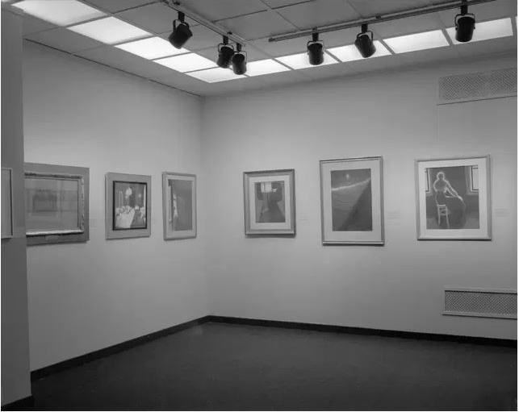

**Léon Spilliaert**

Belgian Art, 1880-1914
L'organisation de tels prêts pour des expositions s'accompagne de **défis complexes en termes de logistique et de conservation**. Chaque transport est méticuleusement préparé, souvent dans des camions climatisés (afin de minimiser les fluctuations de température et d'humidité) et équipés de suspension pneumatique pour limiter les vibrations. Avant le voyage, l'état de l'œuvre est documenté avec précision. Les **conditions d'exposition**, et en particulier le climat, sont également étroitement contrôlées. Pour les œuvres sur papier en particulier, l'exposition à la lumière est un facteur crucial, car les dommages causés par la lumière sont cumulatifs et irréversibles. La quantité de lumière que reçoit le dessin, mesurée en lux, est donc strictement limitée. Toutes ces mesures sont prises pour garantir la sécurité des œuvres d'art lors de leur transport et exposition.
*Crédits photos : © MRBAB, Bruxelles / photo : J. Geleyns - Art Photography | © Records of the Department of Photography, The Brooklyn Museum Archives*
**Léon Spilliaert**
Belgian Art, 1880-1914
Het organiseren van dergelijke bruiklenen voor tentoonstellingen brengt **complexe logistieke en conservatorische uitdagingen** met zich mee. Elk transport wordt minutieus voorbereid, vaak in klimaatgecontroleerde en luchtgeveerde vrachtwagens, om trillingen en schommelingen in temperatuur en vochtigheid te minimaliseren. Voorafgaand aan de reis wordt de conditie van het werk nauwkeurig vastgelegd. Ook de **tentoonstellingsomstandigheden** en meer specifiek het klimaat wordt streng gecontroleerd. Voor werken op papier in het bijzonder is de blootstelling aan licht een cruciale factor. De lichthoeveelheid, uitgedrukt in lux, wordt strikt beperkt omdat lichtschade cumulatief en onomkeerbaar is. Al deze maatregelen worden genomen om te verzekeren dat de kunstwerken veilig verplaatst en getoond kunnen worden.
*Fotocredits: © KMSKB, Brussel / foto: J. Geleyns - Art Photography | © Records of the Department of Photography, The Brooklyn Museum Archives*
**Léon Spilliaert**
Belgian Art, 1880-1914
Organising such loans for exhibitions comes with **complex logistical and conservation challenges**. Each transport is meticulously prepared, often in climate-controlled, air-ride lorries, to minimise fluctuations in temperature and humidity, as well as vibrations. Prior to the journey, the condition of the work is closely recorded. The **exhibition conditions**, and especially the climate, are also tightly controlled. For works on paper in particular, exposure to light is a crucial factor because light damage is cumulative and irreversible. The amount of light received by the drawing, measured in lux, is therefore strictly limited. All these measures are taken to ensure that the artworks can be transported and displayed safely.
*Photo credits: © RMFAB, Brussels / photo: J. Geleyns - Art Photography | © Records of the Department of Photography, The Brooklyn Museum Archives*